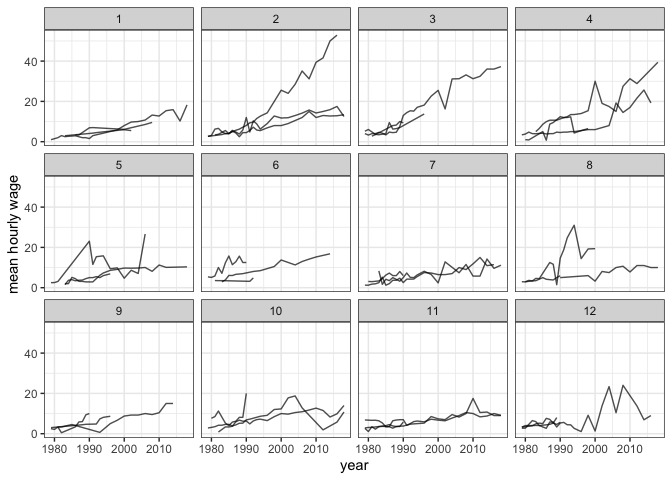

The goal of yowie is to provide longitudinal wages data sets along with several demographic variables of Americans from the National Longitudinal Survey of Youth (NLSY79) from Round 1 (the survey year 1979) to Round 28 (the survey year 2018). The NLSY79 is a longitudinal project held by the U.S. Bureau of Labor Statistics that follows the lives of a sample of American youth born between 1957-64. The cohort originally included 12,686 respondents ages 14-22 when first interviewed in 1979. There are three data sets provided in this package:
-
wages_hs2020: The wages data from the cohort whose highest grade completed is up to 12th grade. -
wages_hs_dropout: The wages data of the high school dropouts. -
demographic_nlsy79: The demographic data of the NLSY79 cohort.
Installation
You can install the development version from GitHub with:
# install.packages("devtools")
devtools::install_github("numbats/yowie")Example
Here is the example of plotting some samples of subjects in wages_hs2020 using brolgar (Tierney, Cook, and Prvan, 2020).
library(yowie)
library(brolgar)
library(ggplot2)
set.seed(20210217)
wages_hs2020 <- as_tsibble(x = wages_hs2020,
key = id,
index = year,
regular = FALSE)
ggplot(wages_hs2020,
aes(x = year,
y = mean_hourly_wage,
group = id)) +
geom_line(alpha = 0.7) +
facet_sample() +
ylab("mean hourly wage") +
theme_bw()